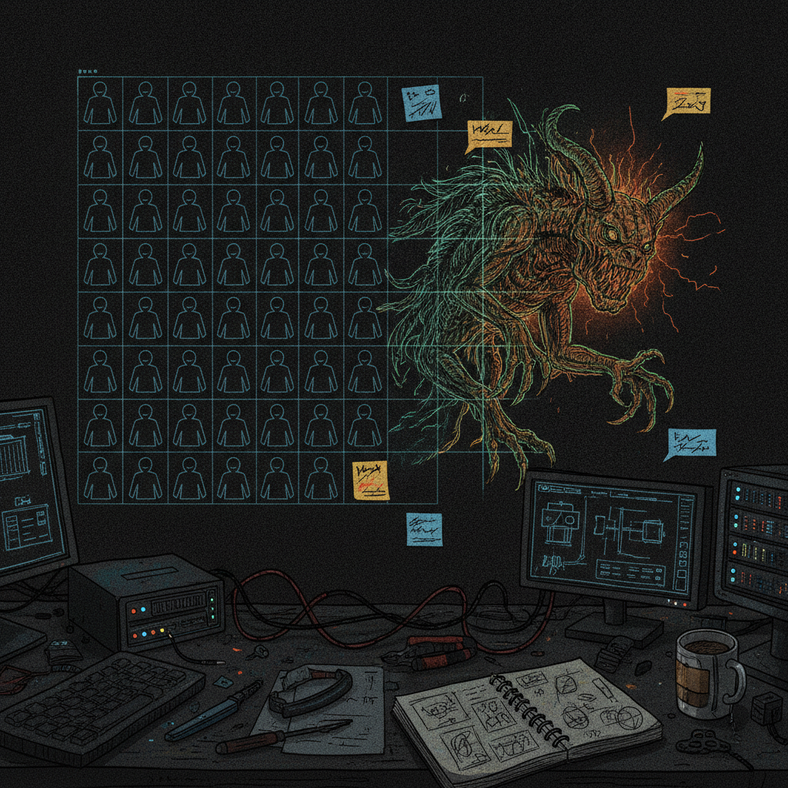

Why New NFT Chains Keep Cloning the Same Old Ideas
Every time a new chain gets some traction, I watch the same handful of NFT ideas show up again wearing a different coat of paint. Different name, different logo, same exact concept underneath. It happens so often that it barely even registers as strange anymore, which is exactly the problem @zubic_eth was pointing at.
What was bookmarked
@zubic_eth posted a short, blunt observation about NFT culture on newer chains. The pattern he called out: Robinhood Punks, Robinhood Apes, Robinhood Kitties, and so on, essentially the same handful of templates (punk-style avatars, ape-style avatars, generative pixel pets) recreated over and over under a new brand whenever a new chain or platform shows up looking for NFT activity. His point was simple. A new chain is basically a blank canvas, a genuine chance to make something original, and instead people default to copying the most recognizable formats from Ethereum's early NFT days.

Why it matters
This is a creator economy problem more than a technology problem. New chains show up promising fresh ground, low fees, new audiences, a clean slate. But building an audience from zero is hard, and recognizable formats are a shortcut. If it looks like Punks, people already know how to think about it, how to value it, how to talk about it. Originality is a harder sell because it takes longer to explain and longer to build trust in. So the path of least resistance wins, and the same four or five ideas keep getting rebuilt on every new chain that comes along.
It is also a signal about incentives. When a new chain needs NFT activity to show growth, it is easier to attract projects that already have a proven template than to wait for someone to take a real creative risk. Familiar sells faster than original, even when original is what actually makes a chain or a collection memorable.
The practical breakdown
What it points to: a recurring pattern where NFT creators optimize for fast recognition instead of original creative work, especially in the early days of a new chain.
Who it affects: builders and artists deciding whether to launch a collection on a new chain, and the chains themselves trying to build a real creative community instead of a copy-paste one.
Why builders should care: the first collections on a new chain often set the tone for what that ecosystem becomes known for. Clone culture early on makes it harder for original work to stand out later, because collectors get trained to expect the familiar templates.
What still needs work: the post is an observation, not a fix. There is no built-in incentive right now that rewards originality over recognizable templates, and that is worth sitting with rather than glossing over.
What I would test first: if I were launching something on a new chain, I would lean hard into a concept tied to an actual community or story I care about, rather than a generic avatar format, and see if that holds attention longer than a clone would.
Rick's take
I like that @zubic_eth said this plainly instead of dancing around it. I have watched a lot of new chains launch over the years, Chia included, and the honest truth is the clone instinct shows up almost everywhere new activity happens. What gives me hope is that the Chia NFT scene has had real stretches of people building genuinely original ideas, not because it is immune to the pattern, but because there is enough of a community here that actually wants to see something new rather than a recycled Punks skin. The one thing worth being honest about is that novelty alone does not carry a project either. Original art still needs a real reason for people to care. But I would rather see ten weird original attempts than one more copy of an ape.
What to watch next
Worth keeping an eye on whether any new chain launch produces a collection that actually breaks the mold and gets remembered for its own idea rather than which template it borrowed. It happens occasionally, and when it does it tends to age a lot better than the clones sitting next to it.
Source and links
Source: X post by @zubic_eth, https://x.com/i/web/status/2076433409262715058, retrieved on 2026-07-12. No external references were included in the post.